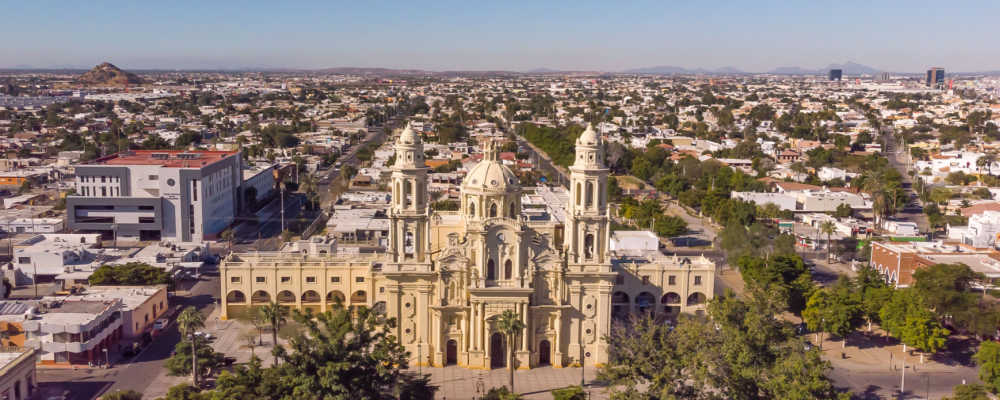

Sonora es un estado ubicado en el noroeste de México. Su capital es Hermosillo, conocida por su diversidad cultural y rica herencia histórica. El estado tiene una superficie de 185,344 km² y una población de aproximadamente 2.9 millones de habitantes, según el censo de 2020. Sonora se destaca por su belleza natural, incluyendo desiertos, costas, y montañas, además de ser un importante polo industrial y económico en el país.
La Feria del Pitic es una de las festividades más destacadas de Sonora, celebrada en Hermosillo cada junio. Este evento incluye exposiciones culturales, música, danzas y competencias deportivas. Además, la Semana Santa en San Luis Río Colorado es muy tradicional, donde se realizan diversas procesiones religiosas y actividades comunitarias.
Entre los platillos típicos de Sonora destacan:
| Dato 1 | Dato 2 | Dato 3 |
|---|---|---|
| Sonora es uno de los principales productores de frutas y verduras en México, destacando la uva, limones y chile. | El desierto de Sonora abarca gran parte del estado, incluyendo el Parque Nacional Cañón del Sumidero. | La cultura Seri, un grupo indígena, tiene su territorio en la región noroccidental del estado, cerca de la frontera con Arizona. |